使用模板操作硬件¶
1. LED¶
1.1 IMX6ULL¶
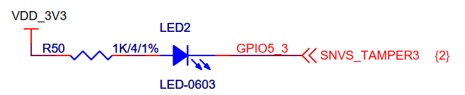
GPIO1 : 0~31
GPIO2:32~63
GPIO5: 4*32
GPIO5_3 : 4*32 + 3
1.2 STM32MP157¶
第1步：确认引脚编号并修改led_drv.c
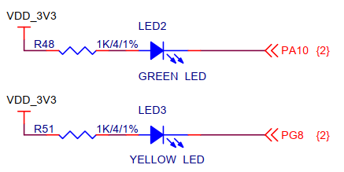
PA10的编号：10
PG8的编号：96+8=104
第2步：修改设备树arch/arm/boot/dts/stm32mp15xx-100ask.dtsi
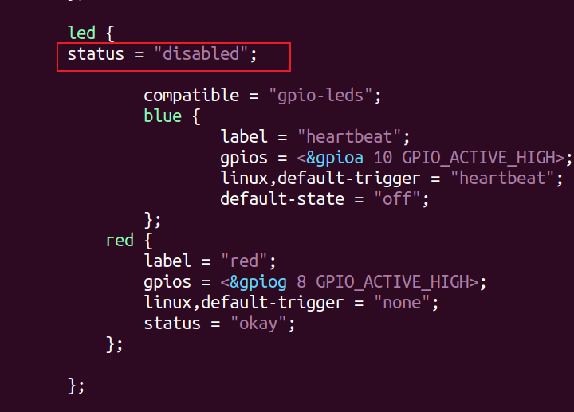
第3步：编译设备树
make dtbs
第4步：替换设备树
// Ubuntu
cp arch/arm/boot/dts/stm32mp157c-100ask-512d-lcd-v1.dtb ~/nfs_rootfs/
// 开发板
mount /dev/mmcblk2p2 /boot
cp /mnt/stm32mp157c-100ask-512d-lcd-v1.dtb /boot
1.3 D1H¶
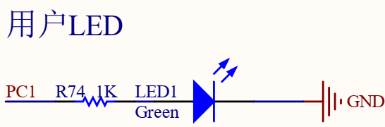
第1步：确认引脚编号
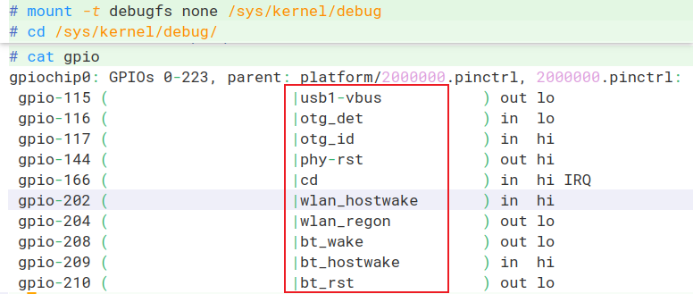
在arch/risc/boot/dts/board.dts里搜上图的红框中的文字，确认引脚是哪个，根据它们的编号推理出：
- 每个PORT占据32个引脚编号
- 反推出PC1的编号是65
其实，有一个计算公式：每组GPIO占据32个编号，编号从0开始，第1组GPIO叫PA。那么PC1的编号就是 2*32+1=65
2. 按键¶
3. 红外感应¶
3.1 接口图¶
3.1.1 IMX6ULL¶
以IMX6ULL为例，下图是跟红外模块的接口图：
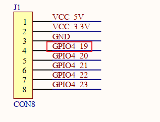
- GPIO4 ==> 第3组 ===> 起始编号 = 3*32 = 96
- GPIO4_19的编号：96+19=115
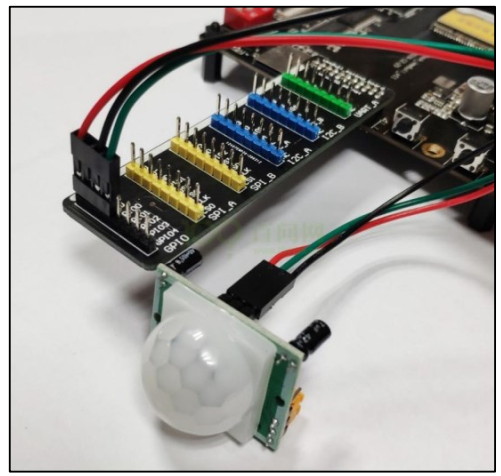
3.1.2 STM32MP157¶
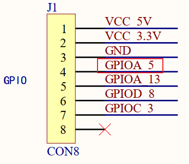
- GPIOA ==> 第0组 ===> 起始编号 = 0*16= 0
- GPIOA_5的编号：0+5=5
3.1.3 D1H¶
PA,PB,PC :每组占据32个编号，PC1的编号 = 2*32 + 1 = 65
3.1.4 T113¶
PA,PB,PC :每组占据32个编号，PC1的编号 = 2*32 + 1 = 65
3.2 修改模板¶
4. 超声波测距模块¶
4.1 SR04工作原理¶
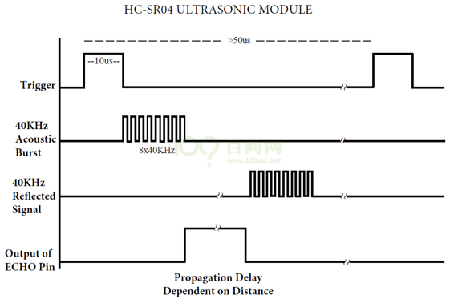
要测距，需如下操作：
- 触发：向Trig（脉冲触发引脚）发出一个大约10us的高电平。
-
模块就自动发出8个40Khz的超声波，超声波遇到障碍物后反射回来，模块收到返回来的超声波。
-
回响：模块接收到反射回来的超声波后，Echo引脚输出一个与检测距离成比例的高电平。
- 我们只要计算Echo引脚维持高电平的时间T即刻计算举例：D = 340*T/2。
4.2 核心函数¶
测试内核精确的时间：ktime_get_ns
4.3 编程¶
以IMX6ULL为例：
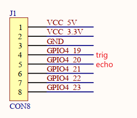
确定引脚编号：
- GPIO4_19的编号3*32+19 = 115
- GPIO4_20的编号3*32+19 = 116
要点：
- 不要在中断处理函数里执行printk
- 不在ioctl发出trig信号后不要printk、在sr04_read里也不要printk
- APP不要频繁地调用ioctl发出trig信号
5. 步进电机¶
5.1 步进电机操作原理¶
5.2 步进电机驱动编写¶
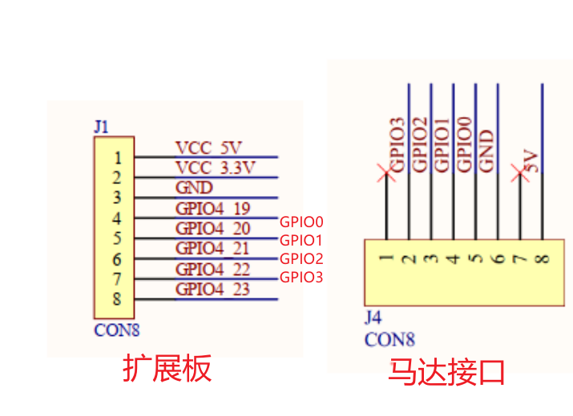
- GPIO0: GPIO4_19, 编号: 3*32+19 = 115
- GPIO1: GPIO4_20, 编号: 3*32+20= 116
- GPIO2: GPIO4_21, 编号: 3*32+21= 117
- GPIO3: GPIO4_22, 编号: 3*32+22= 118
6. DHT11¶
6.1 硬件操作原理¶
6.2 编程¶
确定引脚：
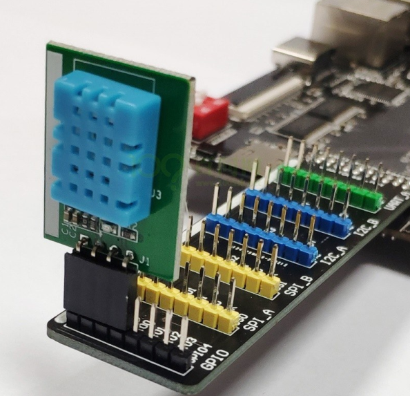
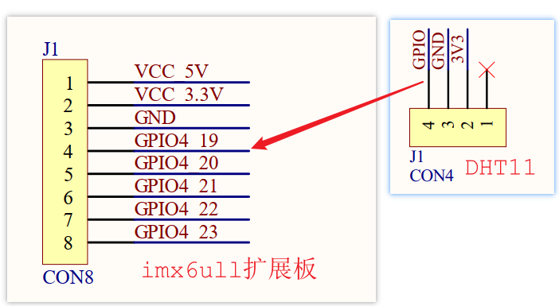
- GPIO4_19编号：3*32+19=115
- 测试内核精确的时间：
ktime_get_ns
7. DS18B20¶
7.1 硬件连接¶
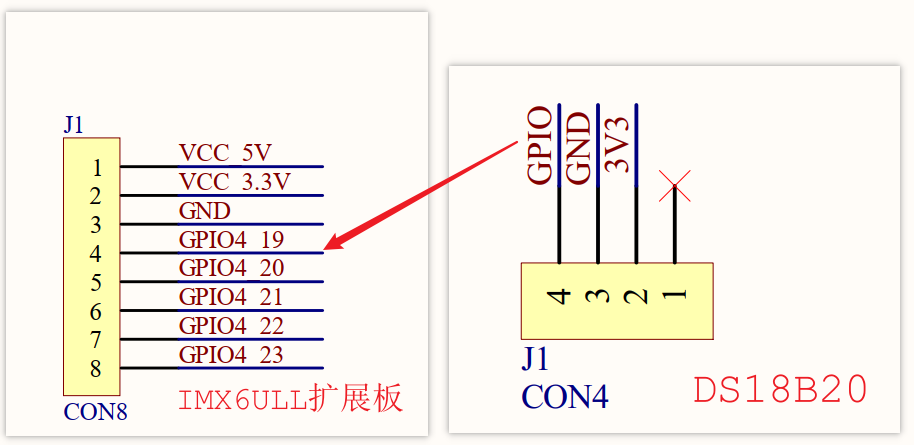
7.2 访问流程¶
在一条数据线上，可以连接多个DS18B20。每个DS18B20都内嵌不同的ID，所以需要先选择某个DS18B20。
如果只有一个DS18B20，就不需要选择。
访问DS18B20的流程为：启动温度转换、读取温度。
怎么启动温度转换？方法如下：
- 发出Start信号
- 得到回应
- 发出8位的数据，用于选择某个DS18B20
- 发出温度转换命令
- 等待温度转换完毕
温度转换完毕后，数据存在DS18B20内部的暂存器中。怎么读出数据？方法如下：
- 发出Start信号
- 得到回应
- 发出8位的数据，用于选择某个DS18B20
- 发出读暂存器的命令
- 读温度低8位
- 读温度高8位
7.3 硬件信号¶
7.3.1 Start和回应¶
深黑色线表示由主机驱动信号，浅灰色线表示由DS18B20驱动信号。
最开始时引脚是高电平，想要开始传输信号：
- 必须要拉低至少480us，这是复位信号；
- 然后拉高释放总线，等待15~60us之后，
- 如果GPIO上连有DS18B20芯片，它会拉低60~240us：这就是回应
如果主机在最后检查到60～240us的低脉冲回应信号，则表示DS18B20初始化成功。
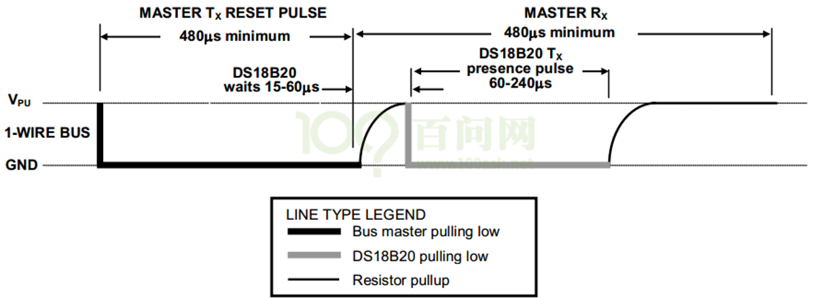
7.3.2 写一位数据¶
如果写0，拉低至少60us(写周期为60-120us)即可；
如果写1，先拉低至少1us，然后拉高，整个写周期至少为60us即可。
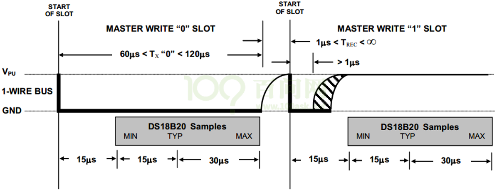
7.3.3 读一位数据¶
主机先拉低至少1us，随后读取电平，如果为0，即读到的数据是0，如果为1，即可读到的数据是1。
整个过程必须在15us内完成，15us后引脚都会被拉高。
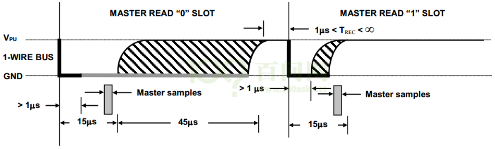
7.4 DS18B20内部寄存器¶
参考：
《嵌入式Linux应用开发完全手册V4.0_韦东山全系列视频文档-IMX6ULL开发板.docx》
第13篇 IMX6ULL裸机开发
第二十二章 DS18B20温度模块
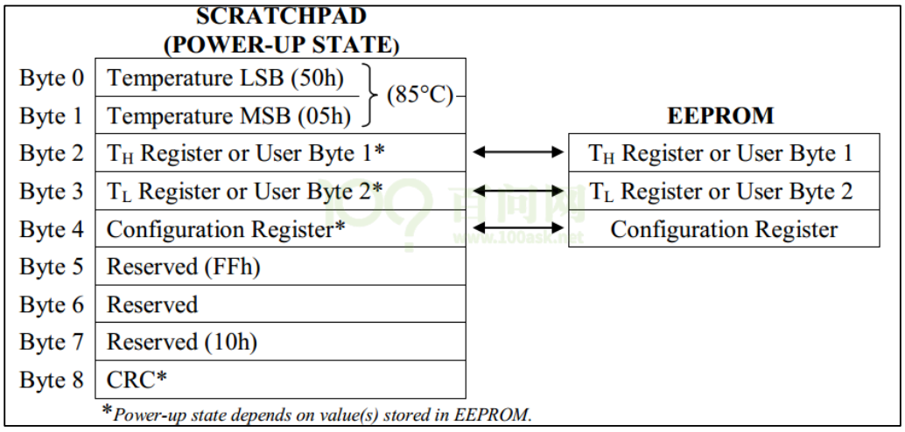
7.5 编写驱动程序¶
- GPIO4_19，编号：3*32+19=115
- CRC：参考 https://www.cnblogs.com/yuanguanghui/p/12737740.html
- 测试内核精确的时间：
ktime_get_ns - 关键：关中断下操作
8. 红外遥控器¶
8.1 操作原理¶
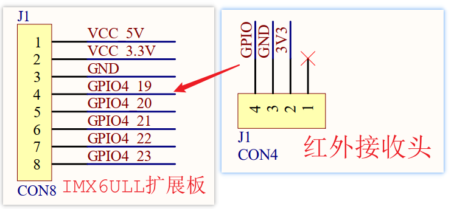
8.2 编写程序¶
- 引脚编号：GPIO4_19, 编号 3*32+19=115
- 测试内核精确的时间：
ktime_get_ns